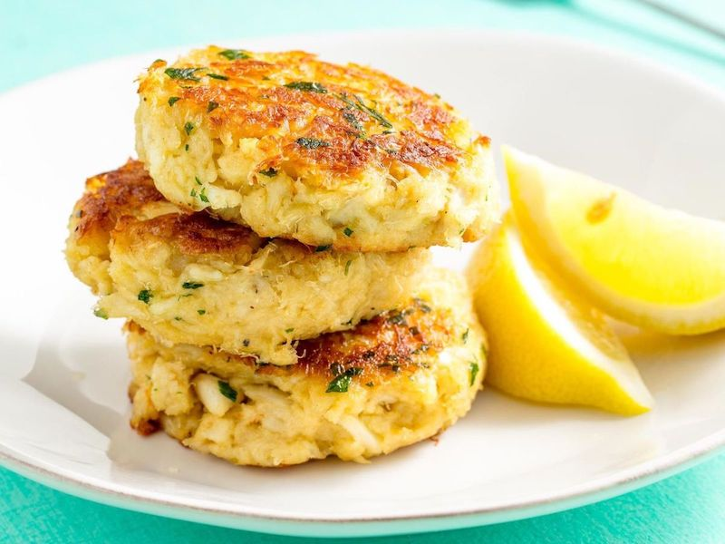

Odin Recipes
Crab Cakes

Description
Crab cakes so good your ex will want you back. Unlike them, this
recipe is simple and won't leave you for your best friend.
Ingredients
- 1 egg
- 3 tablespoons mayonnaise
- 1 tablespoon minced green onions
- 4 teaspoons lemon juice
- 1 teaspoon dried tarragon
- ⅛ teaspoon red pepper flakes
- 8 ounces crabmeat
- ½ cup crushed buttery round crackers
- 1 tablespoon butter
Steps
- Whisk egg, mayonnaise, green onions, lemon juice, tarragon,
and pepper flakes together in a medium bowl. Gently stir in
crabmeat, being careful not to break up meat. Gradually mix
in cracker crumbs, adding until desired consistency is achieved.
Form crab mixture into 4 patties.
- Heat butter in a skillet over medium heat.
- Cook patties in the skillet until golden brown, 5 to 6 minutes on each side.